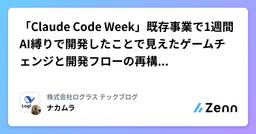

株式会社ログラス テックブログのフィード
https://zenn.dev/p/loglass
株式会社ログラスは「良い景気を作ろう。」をミッションに、企業経営を推進する次世代型経営管理クラウド「Loglass 経営管理」を開発し提供しています。
フィード

開発プロセスをエミュレートする！Claude Codeの実践ガイド 1
1
株式会社ログラス テックブログのフィード
!この記事は毎週必ず記事がでるテックブログ Loglass Tech Blog Sprint の98週目の記事です！X年間連続達成まで残り8週となりました！ はじめにClaude Codeのような強力なAIエージェントが登場し、私達のソフトウェア開発に大きな変革がありました。AIエージェントを導入しはじめたものの、最初に直面する課題は「思ったよりも生産性向上に繋がらない」と感じる方はいるのではないでしょうか。簡単な関数や定型コードの生成には大いに役立ってはいるが、難解なビジネスロジックや、複雑なビジネスフローをいざ実装しようとすると、求めていた品質よりも、やや劣るようなもの...
11時間前

「Claude Code Week」既存事業で1週間AI縛りで開発したことで見えたゲームチェンジと開発フローの再構築の必要性 100
株式会社ログラス テックブログのフィード
!この記事は毎週必ず記事がでるテックブログ Loglass Tech Blog Sprint の97週目の記事です！2年間連続達成まで残り9週となりました！ はじめにログラスでエンジニアをしているナカムラ（@nakamura_meg)です。今回は、チームで実施した「Claude Code Week」の取り組みについて、得られた知見を共有します。※Claude Code関連の資料は一番下にまとめました なぜ今、強制的な変革が必要なのかAnthropic社のCEOであるダリオ・アモデイの発言が現実味を帯びてきました。「今から3～6か月もすれば、AIがコードの90%を書...
5日前

Claude CodeがGitHubのIssue内の画像を読めるようにするgh-assetというOSSを公開しました
株式会社ログラス テックブログのフィード
はじめにgh-asssetというOSSを公開しました。https://github.com/YuitoSato/gh-assetこのような形で使います。gh-asset download <asset_id> <destination>gh-asset download 1609a4fd-1243-463c-9504-b390d55c6d02 ~/Downloads=> Downloading https://github.com/user-attachments/assets/1609a4fd-1243-463c-9504-b390d55c...
10日前
BDDを導入してみて実際どうだったか
株式会社ログラス テックブログのフィード
!この記事は毎週必ず記事がでるテックブログ Loglass Tech Blog Sprint の96週目の記事です！2年間連続達成まで残り10週となりました！ はじめにこんにちは、ログラスの村本です。最近、チームのプロダクト品質について改善する機会があり、その文脈でBDDを導入したので、その時のお話を書こうと思います。この記事では、BDDの導入の背景から、どのように導入して、実際どうだったかまでを紹介しようとおもいます。同じような課題を抱えるチームの皆さんにとって、この記事が何かしらのヒントになれば幸いです☺️ BDDを導入した目的 当時のチームが抱えていた課題...
11日前
プロダクト組織の一体感を醸成した「アドベントカレンダー」企画推進の裏側
株式会社ログラス テックブログのフィード
!この記事は毎週必ず記事がでるテックブログ Loglass Tech Blog Sprint の95週目の記事です！2年間連続達成まで残り11週となりました！こんにちは、ログラスでエンジニアをしております浅井 (@mixplace) です。2025年も6月に入り、あと半年もすればアドベントカレンダーの季節ですね。昨年末、私たちログラスのプロダクト組織はアドベントカレンダー企画に一丸となって取り組みました。今回はアドベントカレンダーの企画推進者としてリードした中で、どのように進めたのかを紹介したいと思います。少し気の早いテーマに感じられるかもしれませんが、今年の企画を検討され...
17日前
「ファイル復元トレーニング」というCursorルールのトレーニング方法
株式会社ログラス テックブログのフィード
!この記事は毎週必ず記事がでるテックブログ Loglass Tech Blog Sprint の94週目の記事です！2年間連続達成まで残り12週となりました！あと3ヶ月でテックブログ毎週更新も2年連続達成です！ はじめにこんにちはログラスのエンジニアの @Yuiiitoto です。みなさんはCursor使っていますか？そしてCursorのルールをどのように改善していますか？作りっぱなしになっていないですか？そんなあなたに今回は 「ファイル復元トレーニング」 というルールについてのトレーニング方法をご紹介します。名前は自分が適当につけていますが、お...
25日前
何が運用負荷を増大させるのか？課題と解決、どういうチームになっていくべきか。
株式会社ログラス テックブログのフィード
!この記事は毎週必ず記事がでるテックブログ Loglass Tech Blog Sprint の93週目の記事です！2年間連続達成まで残り13週となりました！ 自己紹介ログラスの勝丸(@shin1988)と言います。最近はクラウド基盤チームというチームのマネージャーをやっています。今回のLoglass Tech Blog Sprintは「運用負荷」について書いてみたいと思います。 背景最近段々と運用負荷が高まっているな実感することが増えてきました。ログラスは2020年に本番ローンチをして、もう5年ほど運用を行っています。おかげさまでお客様が増えてきて、プロダクトも大きく...
1ヶ月前
AI時代なので、もうDDDは要らなくなりますかね？
株式会社ログラス テックブログのフィード
!🐳 この記事は「Loglass Tech Blog Sprint」の92週目の記事です。2年間連続達成まで 残り14週 となりました！ DDDは今も“武器”になるのか？ここ1年でプロダクト開発の環境は大きく変わりました。AIエージェントが開発現場で“当たり前”のように使われる時代になりつつあります。そんな中で、「DDD(ドメイン駆動設計)って今の時代にも必要なの？AI時代になったらもう使わなくなるのでは？」と疑問に思う方もいるかもしれません。私はこう思います。DDDは、AI時代にこそレバレッジを効かせることができる、価値を届けるための“武器”になる。(少なくとも、あ...
1ヶ月前
コミュニティ文化を組織に根付かせるまでの原体験と思考
株式会社ログラス テックブログのフィード
!🐳 この記事は「Loglass Tech Blog Sprint」の91週目の記事です。2年間連続達成まで 残り 15 週 となりました！ログラスでVPoEをしている飯田(@ysk_118)です。この記事では私の個人的な経験からログラスにおけるコミュニティとの関わり方についての考えをお伝えできればと思います。 この記事の背景今でこそ私個人としてはコミュニティに足を運べば知っている人がいて、「最近どうですか」から始まりいろんな雑談ができるようになったのですが、私自身がそんな状態に至るまで、そして社内の他の人に同じような体験をしてもらうまでにはそれなりの道のりがあったように感...
1ヶ月前
分散システムでもシンプルに ── Restate の基本概念
株式会社ログラス テックブログのフィード
!この記事は毎週必ず記事がでるテックブログ Loglass Tech Blog Sprint の 90 週目の記事です！2 年間連続達成まで残り 16 週となりました👑 🌱 はじめにログラスのアプリケーション基盤チームで働いている三沢です。アプリケーション基盤では技術のキャッチアップ目的で Technology Radar を眺めて、気になったものを軽く深掘る時間を作っています。今回は Technology Radar vol.32 (2025/04) からピックアップした、Restate について紹介したいと思います。Restate は今回 Platform 分野に新規で...
2ヶ月前
ログラスでのコンポーネントライブラリ構築備忘録
株式会社ログラス テックブログのフィード
ログラスのフロントエンドチーム所属の gege4 です。 はじめに：ログラスにおけるコンポーネントライブラリの必要性ログラスでは 2 年で 10 個の新規事業立ち上げに向けてのマルチプロダクト開発が絶賛進行しています。https://note.com/tomosooon/n/nc7e72c2d19b9これまでメインプロダクトは monorepo 開発で完結しており、デザインシステムと連携した共通コンポーネントやデザイントークンも同リポジトリ内に閉じていました。しかし、事業の拡大に伴う、統一された UI/UX の提供を目指したフロントエンド開発のスケールにはライブラリ化は避けら...
2ヶ月前
Spring Boot の REST API で Union Type を使う
株式会社ログラス テックブログのフィード
!この記事は毎週必ず記事がでるテックブログ Loglass Tech Blog Sprint の89週目の記事です！2 年間連続達成まで残り17週となりました！ はじめに2月に株式会社ログラスにエンジニアとしてジョインした櫻井です。バックエンドの開発が得意ですが、フロントエンドやインフラも触る雑食系エンジニアです。この記事では、Spring Boot (& Kotlin) の REST API で Union Type を取り扱う方法springdoc-openapi を使って、TypeScript から扱いやすい形で APIスキーマ を公開する方法を解...
2ヶ月前
手作りして学ぶMCPの仕組み
株式会社ログラス テックブログのフィード
!この記事は毎週必ず記事がでるテックブログ Loglass Tech Blog Sprint の88週目の記事です！2年間連続達成まで残り18週となりました！ 1. はじめにModel Context Protocol(MCP)は公式SDKを使って手軽に実装が可能です。しかしSDKでの実装は楽な反面、内部の仕組みを意識することは少ないです。この記事ではMCPの通信の仕組みを見ていき、SDKを使わずに最小限の実装のMCPサーバーを作ってみることで理解を深めたいと思います。この記事で触れることMCPのアーキテクチャと通信の概要JSON-RPCベースのメッセージングプロトコ...
2ヶ月前
コンポーネント設計に大事なことは全部テストが教えてくれる
株式会社ログラス テックブログのフィード
!この記事は毎週必ず記事がでるテックブログ Loglass Tech Blog Sprint の 87 週目の記事です！2 年間連続達成まで残り 19 週となりました！ 0. はじめにログラスのフロントエンド基盤チーム所属の gege4 です。 対象読者コンポーネント設計に迷いがちな方普段フロントエンドのテストをあまり実装しない方いつもなんかコンポーネントが複雑になっちゃう方 TL;DR;コンポーネントのテストコードを日頃から書くとコンポーネントの作り方が自然と整っていくよねっていう話。 1. TODO アプリを例に考える例えば以下のような TODO...
2ヶ月前
DevinにMCPサーバーを作ってもらった
株式会社ログラス テックブログのフィード
MCP流行ってますね！Googleが先日公開したA2Aのドキュメントに「Agent2Agent❤️MCP」というタイトルのページもありましたが、あれよあれよの間に現時点では標準規格の座を掴んだと言えるでしょう。https://google.github.io/A2A/#/topics/a2a_and_mcp今回はMCPサーバーをDevinに作ってもらうという話です。作ってもらったMCPサーバーは、王道の自社ドキュメントにアクセスするためのMCPです。MCPからアクセス可能にした肝心のドキュメント自体も下記スライドで発表した、Devinに自動更新させているFAQ・仕様ドキュメント...
3ヶ月前
ログラスでSREを実践する面白さ
株式会社ログラス テックブログのフィード
!この記事は毎週必ず記事がでるテックブログ Loglass Tech Blog Sprint の86週目の記事です！2年間連続達成まで残り20週となりました！ はじめに2024年10月にログラスのクラウド基盤チームで働いている中井 (elmo) です。早いものでログラスに入社して、半年経ち、すこしずつ会社やチームにも馴染んできました。私が所属するクラウド基盤チームは、各プロダクトのクラウドインフラの構築・運用を担っているチームです。最近では、インフラ運用にとどまらず、SREとしてのプラクティス推進にも取り組み始めており、チームとしての活動の幅が広がってきています。この...
3ヶ月前
社会人大学生による、エンジニアが数学をちょっとだけ好きになる話
株式会社ログラス テックブログのフィード
!この記事は毎週必ず記事がでるテックブログ Loglass Tech Blog Sprint の85週目の記事です！2年間連続達成まで残り21週となりました！ はじめにエンジニアとして働き始めてから3年が経ち、ソフトウェア開発について多くのことを学んできました。最近の技術の進化により、ほとんどのツールは誰でも簡単に理解し、使えるようになったと感じています。しかし、技術の本質的な部分に踏み込むと、途端に理解に苦労するといった経験をしてきました。表面的な技術だけでなく、今日の技術の基礎となる教養を身につけたいと考え、現在はログラスで働きながら、通信制大学で情報工学を勉強していま...
3ヶ月前
FASTにおける「ふりかえり」の半年間の探索
株式会社ログラス テックブログのフィード
!この記事は毎週必ず記事がでるテックブログ Loglass Tech Blog Sprint の84週目の記事です！2年間連続達成まで残り23週となりました！ログラスでアジャイルコーチをしております、おーのA（@ohnoeight）です。 ログラスの経営管理プロダクトチームでは、事業の成長を見据え、FAST（Fluid Adaptive Scaling Technology）を導入しています。2024年10月の入社以来、ログラスのFASTにおけるふりかえりを探索してきた過程を記事にします。 FASTについて本記事ではFASTについての説明は省略します。FAST Guide...
3ヶ月前
ログラスにおけるSREの現状と未来
株式会社ログラス テックブログのフィード
!この記事は毎週必ず記事がでるテックブログ Loglass Tech Blog Sprint の83週目の記事です！2年間連続達成まで残り23週となりました！ はじめにはじめまして。2024年10月にログラスにジョインした見形（mekka）と申します。以前は某ToB系のSaaSでSREのEMをしていました。現在はクラウド基盤チームにてインフラだったり、運用周りのあれこれを担当しています。あれ、SREじゃないの？ というツッコミはブログの中でも記載していこうと思います。ログラスはスタートアップの組織であり、運用周りはまだまだ整備が必要な状態です。そんなところが楽しそう...
3ヶ月前
Cursorを使ってパスキー認証のアプリケーションを開発してみた
株式会社ログラス テックブログのフィード
!この記事は毎週必ず記事がでるテックブログ Loglass Tech Blog Sprint の82週目の記事です！2年間連続達成まで 残り 24 週 となりました！ はじめにこんにちは。ログラスのエンジニアの鈴木(@sunazukin_it)です。毎年この季節は花粉に苦しめられているのですが、今年は早めに耳鼻科で薬をもらったので、なんとか生活できています🌲さて、先日、代表の布川から発信があったように、ログラスではエンジニアの生産性向上のためにCursorのライセンスが配布されました。今回は、以前から気になっていた認証方式であるパスキーについて、Cursorを使ってアプリ...
4ヶ月前